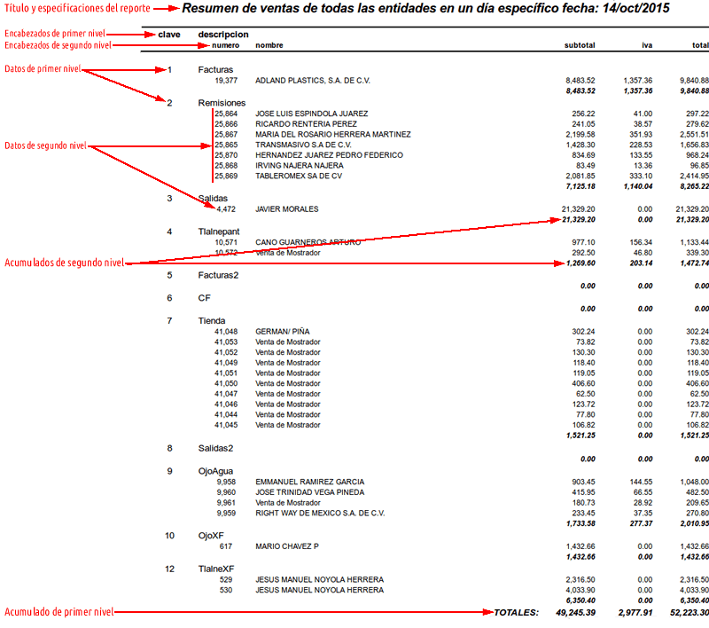

El módulo administrativo de Servidor y Empresas del SAF te permite controlar:
- La configuración de propiedades del servidor.
- Las actualizaciones del mismo.
- Las propiedades de las empresas.
- Los respaldos y restauración de empresas individuales.
- Los respaldos del servidor completo.
- El desarrollo de reportes y gráficas para el mismo SAF o para empresas del CEF.
Los paneles Izquierdo, Derecho e Inferior aparecen vacíos porque este módulo no los utiliza. El panel de cuerpo principal muestra las bases de datos (empresas) instaladas en este servidor. Las columnas por defecto son la siguientes:
-
Clave. Es el identificador de la base de datos. Este, se debe ingresar al registro de inicio de sesión en el CEF.
-
Fecha. Fecha de creación de la base de datos.
-
Usuario. Usuario de PostgreSQL, dueño de la base de datos.
-
Nombre. Es el nombre de la empresa o persona física.
-
Correo. Correo electrónico del contacto. Este correo es utilizado como remitente para el envío automático.
-
Web. Página web de la empresa o persona física.
-
Dirección. Dirección de la empresa o persona física registrada.
-
Población. Su población.
-
CP. Su código postal.
NOTA: Las bases de datos activas y en un estado congruente, siempre aparecen en color negro, mientras que todas las que contienen errores o están corruptas dentro del servidor aparecen en color rojo.
En el módulo de Servidor y Empresas, intervienen los procesos primarios de propiedades del servidor, actualizar servidor, agregar empresa, cambiar propiedades, eliminar empresa, respaldar empresa, restaurar empresa y generar reporte.
1 .- Propiedades del Servidor.
Permite establecer algunas de las propiedades de este servidor, las cuales se dividen en Generales, Automatización de tareas, Datos de autenticación al servicio web forseti, Datos del Proveedor Autorizado de Certificación, Datos del servidor SMTP y Datos del servicio Amazon S3.
Generales:
Estas propiedades engloban configuraciones generales que necesita el servidor para hacer tareas básicas para agregar empresas, eliminarlas, respaldarlas, actualizar el servidor y otras. Los datos que hay que configurar aquí, se muestran a continuación:
-
Ruta de Instalación de TOMCAT, Es donde quedó instalado el servidor web Tomcat7. En distribuciones basadas en Ubuntu por lo general se instala en "/var/lib/tomcat7".
-
Ruta del OpenJDK o Java JDK, Es donde quedó instalada la Máquina Virtual de Java utilizada por tomcat y la aplicación forseti.
-
Nombre de este servidor, Un nombre común para identificar este servidor ante las terminales que se conecten a el. Si se es proveedor del servicio de Out-Sourcing, este nombre debería hacer referencia a tu negocio.
-
URL de revisión y descarga de actualizaciones forseti, Es la URL del servidor que contenga las actualizaciones de forseti. Estas se publican en la sección SOF / Anexos / Rutas de descarga.
-
Contraseña de fsi, Esta es muy importante. fsi es el usuario administrativo del SAF, fsi puede hacer todo, y absolutamente todo dentro del SAF, por lo tanto, se debería proporcionar una contraseña bastante fuerte y cambiarse regularmente. Se sugiere no usar este usuario para ninguna tarea, por el contrario, se debería dar de alta un rol administrativo y asignarle los permisos necesarios. NOTA MUY IMPORTANTE: Si se deja en blanco esta contraseña, no se cambiará.
-
Confirmación de contraseña de fsi, Debes confirmar aquí, la misma contraseña del campo anterior o dejarla en blanco si no se cambiará
-
Infraestructura PostgreSQL, Esta debe ser Local o Segundo Servidor, AWS RDS se utilizaba en el pasado para infraestructuras de base de datos montadas en el servicio Amazon Relational Database Systems. Este campo indicaba al servidor ejecutar o no, respaldos de servidor al nivel de bases de datos. Como en una infraestructura RDS los respaldos se generan por el servicio, en caso de estar seleccionado, el servidor forseti no generaba respaldos de todo el servidor. Hoy en día, esto no tiene efecto ya que se generan respaldo aún sobre infraestructuras RDS, y solo se proporciona para compatibilidad hacia atrás.
-
Ruta de Respaldos, Es la ruta donde se guardarán los archivos ZIP de los respaldos generados de todo el servidor, o de las bases de datos individuales.
Automatización de Tareas:
El gestor de tareas automáticas, permite al servidor forseti, ejecutar procesos programados diariamente. Estos, son procesos del servidor y de cada empresa instalada que se pueden realizar manualmente, pero que si se olvidan por largo tiempo, podrían traer tanto resultados inesperados en las empresas, como resultados funestos si por ejemplo, se cayera el servidor. Dentro de estas tareas, se realizan los procesos de actualización del servidor, respaldos completos, actualización de saldos del CEF y otros procesos de cada empresa instalada.
-
Hora de comienzo de procesos, Es la hora a la que se ejecutará el gestor de tareas automáticas. Esta debe estar en formato hh:mm de 24 hrs, por ejemplo, 13:10 para la una de la tarde con diez minutos. La hora, la toma del reloj del servidor web y ésta debería ser una hora en la cual el servidor forseti tenga la menor carga de trabajo posible, ya que estos procesos pueden alentar bastante el servicio.
-
Revisión de actualizaciones disponibles, Bandera para marcar si es que se desea que el gestor ejecute el proceso de actualización de versión del servidor (si administras bien el servidor te sugerimos no activar esta bandera y mejor hacer las actualizaciones manualmente).
-
Respaldos, Bandera para marcar si es que se requieren respaldos diarios automáticos de todo el servidor.
-
Actualización de saldos y otros, en todas las empresas, Bandera para indicar si se desea realizar la actualización de saldos, existencias y otras actualizaciones que se necesitan realizar en cada empresa instalada en el servidor.Véase el CEF/Centro de control/Saldos para mayor información sobre lo que son estas actualizaciones.
NOTA: Los cambios de esta sección solo se reflejan al reiniciar el servidor.
Datos de este servidor, para autenticarse en un servicio web de forseti para recibir servicio de timbrado, correo electrónico automático y/o alojamiento de archivos en la nube:
Forseti maneja un servicio web basado en la API de REST que permite a servidores forseti de terceros conectarse a el, llamemos a estos últimos servidores "clientes". Cada cliente puede recibir el servicio de timbrado de comprobantes fiscales digitales como lo son facturas y recibos de nómina, también puede enviar correo electrónico automático como por ejemplo al hacer una factura, puede enviarle el archivo xml y pdf al comprador, y además, las empresas de cada cliente pueden guardar archivos importantes en la nube. Cada cliente necesita enviar los datos de autenticación al servidor forseti que brinda el servicio web, estos son los siguientes:
-
URL de conexión al servicio web forseti con puerto explicito, Es la IP o nombre de dominio, con número de puerto explícito, en la que escucha la API. Por ejemplo, si la API utilizada para timbrar se encuentra activa en el mismo servidor forseti, la URL debería ser localhost:443 o localhost:8443 dependiendo de la configuración de tomcat. Para utilizar APIs de otro servidor forseti, la ruta podría ser el dominio o la IP pública del servicio, por ejemplo, empresa-de-out-sourcing-forseti.com:443 o 54.244.95.209:443.
-
ID de este servidor forseti, Es el identificador de nuestro "servidor cliente" en el estándar de la Open Software Foundation (OSF) para computación distribuida, UUID (universally unique identifier). Este lo utilizará la API para verificar si el cliente está registrado.
-
Usuario para el servicio, El usuario de nuestra cuenta
-
Contraseña para el servicio, La contraseña de nuestra cuenta. NOTA MUY IMPORTANTE: Si se deja en blanco, esta contraseña no se cambiará.
Forseti permite el timbrado de comprobantes fiscales digitales a través
del PAC Edicom, también permite el envío de correos automáticos a través de la API
JavaMail a un servidor SMTP (Simple Mail Transfer Protocol), que es, el
que definitivamente manda el correo, y por último, utiliza el servicio Amazon S3 para el alojamiento de archivos en la nube. Para ello, se han desarrollado tres APIs basadas en REST
llamadas JPacConn, JSmtpConn y JAwsS3Conn respectivamente que van incluidas en el servidor forseti. Estas APIs,
permiten que tanto el servidor local como servidores forseti ajenos, se
conecten a ellas y les manden Comprobantes Fiscales Digitales (CFD), correos electrónicos y archivos importantes para guardar.
La API JPacConn funciona de la siguiente manera: Una
vez recibido el CFD desde el "servidor cliente", la API lo mandará al PAC Edicom para ser timbrado y
esperará la respuesta del CFDI final, lo
regresará al "servidor cliente" local o al externo para que éste último, continúe
con el proceso de generación del archivo PDF.
La API JSmtpConn funciona similar, por ejemplo, cuando se genera un recibo de nómina en el "servidor cliente", se envía toda la información a la API con el correo registrado en los datos
del empleado como destinatario y el correo registrado de la empresa que está solicitando el servicio
como remitente del mensaje. Para que la API finalmente envíe este mensaje, es necesario
tener una cuenta activa en un servidor SMTP. Existen servidores SMTP
públicos como Amazon SES, o puedes configurarte el tuyo propio lo cual
esta fuera del alcance de esta documentación.
Por último, la API JAwsS3Conn recibe el archivo desde el "servidor cliente" y lo guarda en la nube de Amazon S3. También puede recibir la solicitud de descarga de un archivo lo cual genera el regreso del archivo hacia el "servidor cliente", y por último, puede recibir la solicitud de eliminación del archivo lo cual simplemente borra el archivo del almacén de Amazon S3.
Las APIs, gestionan una base de datos de los "servidores cliente" forseti que tienen
permiso para su consumo. Esta base de datos debe incluso contener un
registro del servidor local, de lo contrario, no se podrá consumir
localmente. Cada registro contiene el uuid del servidor cliente, el usuario y la
contraseña. Además, debe de contener el nombre de cada base de datos de cada servidor cliente y algunas otras configuraciones para cada uno de los tres servicios. Estos datos se gestionan directamente en la base de datos FORSETI_ADMIN ya que actualmente la interfaz web para dicho propósito está aún en desarrollo, por lo que tendrán que ser manipuladas directamente a través de un cliente PostgreSQL como psql. La estructura utilizada es la siguiente:
|
Tabla: TBL_PAC_SERVIDORES
|
|
Nombre de columna
|
Descripción
|
| id_servidor |
Es el UUID de 36 caracteres exactamente del servidor cliente
registrado |
| usuario |
El nombre de usuario de registro (Máximo 20 caracteres) |
| pass |
La contraseña para el registro (Máximo 20 caracteres) |
Los siguientes datos de esta tabla responden a los datos
informativos de la empresa o persona física que es dueña
del "servidor cliente" forseti que solicita el servicio web,
estos son: fecha de alta, rfc, compañía, dirección,
población, código postal, correo, página web y teléfono.
|
| status |
Permite especificar A (activo) o B (bloqueado). Si se bloquea, no se
dará servicio a ninguna base de datos del "servidor cliente" en ninguna de las tres APIs hasta que
se active de nuevo. |
|
Tabla: TBL_SRV_SERVICIOS_BD
|
|
Nombre de columna
|
Descripción
|
| id_servidor |
Es el UUID de 36 caracteres exactamente del servidor cliente registrado |
| basedatos |
El nombre de la base de datos del servidor cliente que requiere el servicio.
Este debe de excluir el patrón FSIBD_ del nombre físico
de la base de datos, por lo tanto debe ser exactamente igual al nombre
utilizado para registrarse a la empresa desde el CEF. (Máximo 30
caracteres) |
| status |
Permite especificar A (activo) o B (bloqueado). Si se bloquea, no se
dará servicio a esta base de datos en ninguna
de las tres APIs hasta que se active de nuevo. |
| costomail |
Es el costo que tendrá para esta base de datos cada correo electrónico
enviado (Dato numérico). |
| costos3mb |
Es el costo mensual que tendrá para esta base de datos cada MB
alojado en la nube por medio de este servicio web (Dato numérico). |
| costosello |
Es el costo que tendrá para esta base de datos cada sello de cada factura,
recibo de nómina o cualquier otro comprobante fiscal digital (Dato numérico). |
| saldo |
Es el saldo registrado para esta base de datos. Por cada servicio, el
saldo irá bajando según su costo hasta quedar en cero, en
este momento, ya no se podrá brindar ningún servicio a menos que
las banderas "cobrarmail", "cobrars3mb" o "cobrarsello" estén desactivadas. En este
caso, se ignorará el costo del servicio y el saldo no bajará
(Dato numérico). |
| cobrarsello |
Este puede ser 1 (Activado) o 0 (Desactivado) . En caso de estar activado,
cada sello se cobrará según el costo en "costosello" y el saldo bajará
en esta cantidad. Si está desactivado, se generará el sello
sin importar si tiene saldo o no. |
| cobrarmail |
Este puede ser 1 (Activado) o 0 (Desactivado) . En caso de estar activado,
cada correo electrónico enviado se cobrará según el costo
en "costomail" y el saldo bajará en esta cantidad. Si está
desactivado, se enviará el correo electrónico sin importar
si tiene saldo o no. |
| cobrars3mb |
Este puede ser 1 (Activado) o 0 (Desactivado) . En caso de estar activado,
solo se podrá subir o descargar un archivo si el total de MB alojados
para esta base de datos multiplicados por el costo en "costos3mb" es menor
al saldo. Si está desactivado, se podrán subir o descargar
archivos sin importar si tiene saldo o no. |
Distintos servidores
forseti de Out-Sourcing, pueden tener su API activa para que gente que
no tenga cuenta con Edicom, con un servicio de SMTP o con Amazon S3 y que utilice forseti como su sistema
empresarial, pueda aún timbrar sus facturas y demás comprobantes, mandar correo automático y alojar sus archivos en la nube. En el
proyecto SOF de la página oficial forseti.org.mx se brinda información sobre servidores con la API activa.
Para dar de alta tu servidor forseti para tener tus APIs activas, necesitarás tener cuentas con los servicios de Edicom, de Amazon SES u otro SMTP y de Amazon S3. Ya teniendo tus cuentas activas de estos servicios, podrás configurarlas en las siguientes tres secciones.
Datos del Proveedor Autorizado de Certificación (si, y solo si este servidor brinda el servicio de timbrado):
-
URL de conexión al Proveedor, Es la dirección o dominio donde escucha el servicio web para timbrado de comprobantes del PAC Edicom.
-
Usuario para el Proveedor, El usuario de tu cuenta con Edicom.
-
Contraseña para el Proveedor. La contraseña de tu cuenta con Edicom. NOTA MUY IMPORTANTE: Si se deja en blanco esta contraseña, no se cambiará.
Datos del servidor SMTP para el envío de correos electrónicos por JavaMail:
-
URL de conexión al servidor SMTP (IP o Dominio), IP o Dominio del servidor SMTP al cual nos vamos a conectar. Por ejemplo, para Amazon SES, puede ser email-smtp.us-east-1.amazonaws.com
-
Puerto, Por lo regular los servidores SMTP escuchan sobre el puerto 25
-
Usuario, El usuario de nuestra cuenta.
-
Contraseña, La contraseña de nuestra cuenta. NOTA MUY IMPORTANTE: Si se deja en blanco esta contraseña, no se cambiará.
Datos del servicio Amazon S3 para el almacenamiento de archivos en la Nube:
-
Nombre del Bucket en el servicio Amazon S3, Es precisamente el nombre del almacén creado para este servicio dentro de nuestra cuenta con Amazon S3.
-
Access Key, La llave de acceso creada para este bucket.
-
Contraseña, La contraseña para nuestro acceso. NOTA MUY IMPORTANTE: Si se deja en blanco esta contraseña, no se cambiará.
2 .- Actualizar Servidor.
Al ejecutar este proceso, el servidor primero verifica si existen actualizaciones disponibles. Este proceso usa el URL configurada en las propiedades del servidor y en caso de que este servidor demuestre estar en su última versión, el proceso terminará en este punto. De lo contrario, descargará todos los archivos de actualización necesarios para dejar este servidor en la última versión disponible y los ejecutará uno por uno. Por ejemplo, si la versión del servidor es la 4.0.7 y hubieran disponibles las revisiones 8, 9 y 10, se instalará primero la actualización 4.0.8. Al finalizar, proseguirá con la instalación de la actualización 4.0.9 y al finalizar ésta, con la 4.0.10, y en este punto finalizará el proceso. Como cada una de las actualizaciones puede quedar inconclusa (por fallas en la luz etc.), durante el proceso crítico de la actualización, el servidor se pone en un estado inestable "Actualizando", el cual no permite que alguien se registre en el CEF. Aparte, se rigen por un archivo el cual contiene el estatus de cada actualización, para que así, se pueda reiniciar la actualización desde el punto en el que se quedó, justo antes de la falla eléctrica, y así, regresar al servidor a un estado estable. Las actualizaciones se pueden llevar a cabo de manera manual (este proceso) y/o de manera automática, configurándola en las propiedades del servidor. Es muy importante revisar el archivo de registro de la actualización para poder controlar algún error que pudiera presentarse durante el proceso. Cada actualización, actúa primero sobre cada base de datos de empresas instaladas, y al finalizar, sobre la base de datos principal FORSETI_ADMIN. Es por esto, que las actualizaciones pueden tardar un tiempo considerable antes de finalizar, sobre todo, cuando no se ha actualizado el servidor en un período de tiempo razonablemente largo.
3 .- Agregar Empresa.
Permite dar de alta empresas en este servidor. Cada empresa actúa como una base de datos independiente en el servidor PostgreSQL y maneja algunos archivos de configuración. La estructura para la creación de la base de datos la toma del archivo de sistema .forseti_inibd alojado en la instalación forseti. El formulario para la creación de una empresa incluye:
-
Nombre, Es un nombre corto con el patrón "[A-Z]{4,20}" (de 4 a 20 caracteres máximo, de la A a la Z en mayúsculas), para identificar el registro de la empresa o persona física. Este mismo nombre, pero en minúsculas, será el usuario registrado en PostgreSQL dueño de la base de datos, lo cual quiere decir, que será el usuario administrativo de la empresa en el CEF.
-
Nombre o Razón Social, Nombre real de la empresa o la persona física. Este nombre se utiliza para el nombre del Emisor en comprobantes fiscales digitales, y para otros procesos.
-
Dirección
-
Población
-
Código Postal
-
Correo Electrónico, el cual se utilizará como remitente de correos enviados por el servicio JavaMail, en caso de que forseti tenga una cuenta en un servidor SMTP.
-
Página Web, La página de la empresa o persona física.
-
Contraseña, Es la clave que se utilizará para el usuario administrativo del CEF y para acceso a la base de datos.
-
Confirmación de Contraseña, Debes confirmar la contraseña anterior.
Estos son los datos básicos para la creación de empresas. Con esta información ya se podrá crear una empresa configurable desde cero o totalmente virgen, sin embargo, el proceso de creación te permite establecer algunas características para la instalación, y por lo tanto, al seguir en el formulario se presentará la siguiente pantalla que permite la selección del tipo de instalación, establecida por los siguientes puntos:
-
Empresa configurada parcialmente. Te permite seleccionar entre algunos tipos de empresas o plantillas que ya están configuradas parcialmente, por ejemplo, una instalación exclusiva para facturación electrónica, una instalación de una empresa distribuidora con control estricto, una empresa productora general, una plantilla con catálogos contable y de gastos pre-registrados, etc.
- Selección de módulos. Si ninguna empresa o plantilla pre-configurada de la sección anterior se adapta a tus necesidades de control, podrás seleccionar los módulos que más te convengan, para darle mayor funcionalidad a tu negocio, por ejemplo, podrás incluir el módulo de nóminas, varios puntos de venta, por ejemplo, México DF, Monterrey y Guadalajara, plantas de producción, etc.
-
Empresa configurable desde cero. Esta selección instala una empresa totalmente configurable desde cero (empresa virgen), por ejemplo, al instalar empresas o plantillas pre-configuradas o por selección de módulos, se instala el catálogo de cuentas contables definido por el SAT y sus asociaciones a los auxiliares. Esta selección no instala nada de configuraciones de sistema ni tampoco un catálogo de cuentas contables. Esta opción es importante para empresas que desean integrar un catálogo contable diferente al del SAT o para aquellas empresas con tiempo trabajando y que desean migrar a forseti. El inconveniente es que el trabajo de configuración de la empresa se tendrá que hacer manualmente desde distintos módulos del CEF.
En esta misma pantalla se debe ingresar el mes de inicio de actividades y la clave y nombre del usuario asociado a la configuración seleccionada, a menos que se haya seleccionado una empresa configurable desde cero. El formulario incluye:
-
Mes.
-
Año.
-
Usuario. Clave del usuario asociado a esta configuración, no la contraseña. Este usuario se utiliza para que te registres en el CEF y no usar el
usuario administrador. La contraseña inicial será igual al usuario, mas
el número 1 al final, por lo tanto, es indispensable cambiarla
inmediatamente después de instalar la empresa. Esto puedes hacerlo
ingresando al CEF y presionando las flechas que se encuentran
inmediatamente después del nombre ubicado en la barra de información
inferior.
-
Nombre. Nombre completo del usuario.
NOTA MUY IMPORTANTE: El mes y año de inicio de actividades es una parte muy importante. A partir de este se podrán ingresar facturas, compras, y cualquier registro en forseti y no se puede cambiar, por lo tanto debes estar seguro de este dato. Para mayor información dirígete a la documentación de Periodos del Centro de control del CEF.
Cualquiera de los tipos de instalación, podrá ser modificado después, por ejemplo, podrás agregar mas puntos de venta, mas bodegas, dar de alta módulo de nómina o de producción, etc. Esto lo puedes hacer entrando con el usuario administrativo del CEF especificado en la pantalla anterior. Al seguir en el formulario, dependiendo del tipo de instalación, se presentará la pantalla correspondiente. Si se ha seleccionado "Empresa configurada parcialmente" se presentará la pantalla con la siguiente información de formulario:
-
Sistema exclusivo de facturación electrónica. Puedes seleccionar esta opción si eres un pequeño empresario que no le interesa el manejo de su contabilidad ni el control de inventarios y/o flujo de efectivo. Este sistema permite agregar y cancelar facturas exclusivamente e incluye una pequeña parte de módulos. Estos son Productos y Servicios del módulo de Catálogos, Clientes y Facturas del módulo de Ventas, CFDI, CE y GDE, Periodos y Formatos del Centro de Control.
-
Empresa con la mayoría de módulos. Si tu empresa está establecida en un solo sitio físico, este es un ERP que integra contabilidad y auxiliares como un todo. Esta configuración agregará una bodega, un punto de venta, uno de compra, un banco y caja, etc. Se incluyen los módulos adecuados para su control administrativo los cuales son: Contabilidad, Catálogos, Caja y Bancos, Almacén, Compras, Ventas y Centro de Control. Además, dependiendo de tu tipo de empresa puedes optar por las siguientes opciones:
-
Empresa distribuidora.
-
Empresa manufacturera. Esta opción incluye además de lo anterior, los módulos de Producción y Nómina con sus debidas entidades dadas de alta.
-
Plantilla base con catálogo de cuentas contables y catálogo de gastos predefinidos. Puedes seleccionar esta plantilla si deseas formar tu empresa a partir de esta base que es precisamente la base contable establecida por el SAT. Una vez instalada la plantilla, podrás dar de alta las bodegas, cajas, bancos, entidades de compra, venta, producción y nómina necesarias. Esta plantilla incluye los módulos y catálogos de Contabilidad, Gastos y el Centro de Control para realizar altas de entidades de ventas, compras, etc., además de otras configuraciones no establecidas por la plantilla. Además, dependiendo de tu tipo de empresa puedes optar por las siguientes opciones de base:
-
Base para empresa distribuidora.
-
Base para empresa manufacturera. Esta opción incluye además de lo anterior, las cuentas de gastos de fabricación y cuentas pertenecientes a la nómina, como sueldos y salarios, etc.
Si se ha seleccionado "Selección de módulos" se presentará la pantalla con el formulario dividido en tres partes las cuales irán apareciendo cuando seleccionemos el botón de siguiente:
-
Selecciona los módulos. En esta parte debes seleccionar los módulos de las secciones de Contabilidad, Catálogos, Caja y Bancos, Almacén, Compras, Ventas, Producción, Nómina y Centro de Control, que deseas dar de alta en tu instalación. Algunos módulos dependen de otros, por ejemplo, si deseas agregar el módulo de Pedidos de la sección de ventas, será indispensable agregar el módulo de Clientes y de Facturación, además del módulo de Productos o Servicios de la sección de catálogos. NOTA IMPORTANTE: Si no se desea llevar contabilidad en la instalación, no se deben seleccionar los módulos contables, esto hará que el sistema no registre pólizas desde los auxiliares ya que las entidades se especificarán como entidades no contables.
-
Ingresa las entidades de tu empresa. Aquí se mostrarán las secciones seleccionadas que requieren el alta de por lo menos alguna entidad, por ejemplo, si se seleccionó el módulo de cajas, en este segundo paso se tendrá que especificar por lo menos una caja para el sistema. Se podrán especificar hasta 20 entidades por módulo ya que las subsecuentes las tendrás que definir desde el módulo de entidades del centro de control del CEF. Por ejemplo, si tienes 17 tiendas, podrás definir las 17 bodegas, 17 entidades de venta y las 17 cajas y/o cuentas bancarias para representar cada punto de venta. Esto obviamente si seleccionaste el módulo de movimientos al almacén, el de facturación y el de bancos y/o cajas. Dependiendo del tipo de entidad, tendrás que definir algunos campos de registro:
-
Cajas. Se tendrá que definir la ficha y descripción de la caja. Las fichas son la manera principal para identificar cualquier tipo de entidad y deben constar cuando mucho de 10 caracteres alfanuméricos.
-
Bancos. Debes definir la ficha, número de cuenta o tarjeta, número de cheque inicial y nombre del banco. Las entidades de banco extranjeras tienen que definirse desde el módulo de entidades del centro de control del CEF.
-
Bodegas de materiales y Almacenes de utensilios. Estas definen la ficha y descripción.
-
Áreas de Compras y/o Gastos y Puntos de Venta. Sobre estas entidades debes definir la ficha y el tipo de entidad. Dentro de los tipos de entidad se encuentran los siguientes:
-
Contado. Solo aceptará compras, gastos o ventas de contado. Con esta configuración será necesario enlazar esta entidad con por lo menos una caja o banco para el registro del pago.
-
Crédito. Solo aceptará compras, gastos o ventas a crédito. Solo será necesario el proveedor o cliente para el registro de la cuenta por pagar o cobrar.
-
Mixta. Esta configuración permitirá registros de contado o crédito, por lo tanto, será necesario el enlace a cajas o bancos.
-
Ninguna. Esta configuración no registrará ningún método de pago, por lo tanto, no registra ni cuentas por pagar o cobrar, ni movimientos de caja o banco.
-
Puntos de Producción. En estos solo debemos definir la ficha y descripción de la entidad.
-
Áreas de Nómina. Debemos definir la ficha, descripción, periodo y tipo de entidad. Dentro del periodo, debemos especificar si es una nómina semanal, quincenal o mensual, y dentro del tipo, debemos decidir si se trata de una nómina estricta la cual requiere de un registro de asistencias, o de una nómina de confianza, la cual no requiere de este registro.
-
Asocia las entidades lógicas con las físicas. En este tercer paso tenemos que asociar las entidades lógicas de compras, gastos, ventas, producción y nómina con sus entidades físicas de cajas, cuentas bancarias y bodegas. Aparecerán todas las entidades lógicas y por debajo de cada una aparecerán las entidades físicas disponibles para su asociación.
Para mayor información sobre entidades lógicas y físicas, dirígete a la documentación del Entidades del Centro de Control del CEF.
Por último, si se ha seleccionado el tipo de instalación "Empresa configurable desde cero" o si ya se han configurado todas las pantallas del formulario de los otros tipos de instalación, se presentará la información de resumen en la pantalla "Resumen de instalación" la cual contiene la información de resumen para nuestra instalación. En este punto, si no estamos seguros deberemos regresar para hacer cambios, de lo contrario, debemos aceptar y esperar a que nuestra empresa sea instalada. Ya que se haya agregado la empresa, será posible ingresar a ella con el usuario administrador, o con el usuario asociado a la configuración. La diferencia esencial radica en que el usuario administrador tendrá acceso a todo el sistema, mientras que el usuario asociado a la configuración solo tendrá acceso a los módulos seleccionados para la instalación. Después de cualquier tipo de instalación, se podrá modificar el sistema, por ejemplo, se podrán agregar más usuarios, mas entidades, cambiar las asociaciones de entidades lógicas con físicas, y cualquier otro tipo de configuraciones soportadas por forseti.
4 .- Cambiar Propiedades.
Permite cambiar los datos de la empresa registrada en el SAF. Se pueden cambiar todos los datos excepto el Nombre corto para identificar el registro de la empresa o persona física porque este campo es el nombre de la base de datos en el servidor.
Una de las principales causas de cambio, es el mantener la contraseña del dueño de la base de datos (usuario administrador con el mismo nombre del Nombre corto) segura, actualizándola periódicamente.
5 .- Eliminar empresa.
Te permite eliminar la empresa seleccionada. Esto eliminará toda y absolutamente toda la base de datos y los archivos de configuración que fueron generados al agregarla. NOTA: Es una buena idea respaldar una empresa justo antes de eliminarla, porque los datos de la empresa ya no se pueden recuperar a menos que se tenga el respaldo. Es importante saber que el respaldo completo de servidor no funciona para recuperar empresas individuales a menos que se extraiga del archivo zip y se vuelva a comprimir adecuada e individualmente.
6 .- Respaldar empresa.
Permite respaldar la empresa seleccionada de la lista. Los respaldos se realizan como archivos comprimidos en ZIP y se guardan en la Ruta de Respaldos que fue configurada en las Propiedades del Servidor. Esta ruta debe apuntar a un medio independiente como por ejemplo a un disco duro externo o a otra máquina en la red.
Los archivos ZIP generados contendrán la estructura y los datos depositados en la base de datos, los archivos alternos a esta base de datos que usa la empresa respaldada para poder ser operada y el archivo forseti.version que contiene la versión del sistema perteneciente al respaldo. NOTA: Este proceso solo respalda bases de datos individuales que sirven para la recuperación de la empresa a un estado anterior en el tiempo.
7 .- Respaldar servidor.
Permite respaldar el servidor completo lo cual incluye a todas las empresa instaladas con un estatus estable y a la base de datos principal FORSETI_ADMIN dentro del archivo de respaldo ZIP. Al igual que los respaldos de empresa, estos se guardan en la Ruta de Respaldos
con las mismas características de estructura y datos, asi como archivos alternos y el archivo
forseti.version. El respaldo de todo el servidor puede ser realizado, además de, con este proceso, estableciendo la bandera de "Respaldos" del
gestor de tareas. Una vez esté activa esta bandera, los respaldos se
llevarán a cabo a la hora en que se haya establecido el gestor.
7 .- Restaurar empresa.
Este proceso se utiliza para copiar una empresa desde un respaldo de la original o para la recuperación de empresas perdidas desde respaldos que se hayan realizado cuando existía. El formulario para restauración incluye:
-
Mostrar respaldos con fecha mayor o igual a. Es la fecha a partir de cuando deseas ver respaldos (inclusive).
-
Copiar empresa instalada. Muestra las empresas instaladas actualmente, de las cuales debes seleccionar una para ver sus respaldos.
-
Restaurar empresa perdida. En caso de que no desees hacer copia de una empresa instalada (a partir de su respaldo), debes indicar aquí, el nombre en mayúsculas, tal y como lo escribías al registrarte en el CEF, de la empresa a restaurar.
-
Selecciona el archivo de respaldo, Si existen respaldos de esta empresa con esta fecha o posterior, aparecen en esta lista. Debes entonces seleccionar el archivo que deseas recuperar. Estos se muestran con el patrón de fecha y hora del respaldo. "FSIBD_[NOMBRE]-AAAA-MM-DD-hh-mm.zip", donde [NOMBRE] es el nombre corto de la base de datos, AAAA es el año, MM el mes, DD el día, hh la hora y mm los minutos en que se realizó este respaldo.
-
Restaurar como, Debes seleccionar el Nombre corto para la base de datos a restaurar. Si la restauración se está realizando porque se necesita una copia exacta de la base de datos respaldada, este nombre debe ser diferente al de la original ya que ésta, todavía existe en el servidor y no se puede duplicar, de lo contrario, es una buena práctica restaurar empresas perdidas con el nombre original.
-
Contraseña, La contraseña del dueño de esta base de datos. NOTA: Esta contraseña no se refiere a la contraseña de la base de datos del respaldo, sino a la contraseña que tendrá la nueva base de datos a recuperar.
-
Confirmación de contraseña.
El proceso de restauración de bases de datos busca los archivos en la Ruta de Respaldos que fue configurada en las Propiedades del Servidor. En el caso que no se tuviera un respaldo específico de una empresa eliminada accidentalmente, se debe extraer manualmente del respaldo del servidor (del archivo "FORSETI_ADMIN-AAAA-MM-DD-hh-mm.zip"). Una vez extraído, se necesitará comprimir este directorio en ZIP con el mismo nombre ( FSIBD_[NOMBRE]-AAAA-MM-DD-hh-mm.zip ) e ingresarlo a la ruta de respaldos. Entonces ya tenemos el respaldo y ya podemos restaurar la empresa perdida.
NOTA MUY IMPORTANTE: No se podrá llevar a cabo el proceso de restauración si la versión del servidor es diferente a la versión de la empresa contenida en el respaldo porque seguramente violará alguna parte de la integridad referencial. Esto sucede cuando los respaldos son anteriores a la última actualización del servidor. Si es crítico restaurar ese respaldo en este servidor, se tendrán que seguir los siguientes pasos:
- Se debe consultar la versión del respaldo mirando dentro del archivo forseti.verson.
- Deberás instalar un servidor temporal de esta versión en otro ordenador (ver documentación de instalación aquí).
- En el servidor temporal instalado, debemos especificar una ruta de respaldos.
- Ahora copiamos el archivo zip del respaldo de la empresa a esta ruta.
- Ahora debemos hacer dueño del respaldo a tomcat7 para que el proceso
tomcat pueda leerlo. Por ejemplo, si el respaldo se llama
FSIBD_TAJA-2014-10-30-23-17.zip, y se encuentra en la ruta
/home/ubuntu/respaldo, desde la terminal debes ejecutar lo siguiente:
$ sudo chown tomcat7 /home/ubuntu/respaldo/
FSIBD_TAJA-2014-10-30-23-17.zip
- Ejecutamos la restauración de la empresa.
- Ahora que ya tenemos la empresa restaurada en el servidor temporal, lo actualizamos. Esto hará que la empresa se actualice también.
- Ahora ejecutamos un nuevo respaldo de la empresa del servidor temporal.
- Finalmente, copiamos el archivo zip del nuevo respaldo a la ruta del servidor principal, hacemos dueño del respaldo a tomcat7, y ejecutamos la restauración.
- Ahora ya podremos ingresar de nuevo a la base de datos perdida, en el servidor principal.
La restauración de servidores completos se lleva a cabo cuando hay una falla en el disco del servidor y otras situaciones desastrosas donde se pierde toda o parte de la información. Para recuperar un servidor completo, es estrictamente necesario seguir los siguientes pasos:
- Copiar el archivo "FORSETI_ADMIN-AAAA-MM-DD-hh-mm.zip" a una ruta en el nuevo servidor. Esta puede ser el directorio personal.
- Hacer la instalación de forseti en el servidor (para la instalación, ver sección de Implantación / Instalación en esta documentación) de la misma versión y revisión del respaldo. Esta se puede revisar en el archivo llamado forseti.version dentro del archivo zip.
- Ya instalado, hacer dueño del respaldo a tomcat7 para que el proceso tomcat pueda leerlo. Por ejemplo, si el respaldo se llama FORSETI_ADMIN-2014-10-30-23-17.zip, y se encuentra en la ruta /home/ubuntu/respaldo, desde la terminal debes ejecutar lo siguiente:
$ sudo chown tomcat7 /home/ubuntu/respaldo/FORSETI_ADMIN-2014-10-30-23-17.zip
- Iniciar el SAF y proporcionar los datos de conexión a la base de datos, la ruta del respaldo que en este caso es "/home/ubuntu/respaldo/FORSETI_ADMIN-2014-10-30-23-17.zip" y la ruta donde está instalado tomcat ( En servidores ubuntu por lo regular será "/var/lib/tomcat7" ).
- Aceptar y esperar a que termine el proceso el cual se puede llevar varios minutos o incluso horas.
- Ya terminado este proceso, se podrá accesar al SAF y a cada empresa del CEF como normalmente se venía haciendo.
8 .- Generar Reporte.
Este proceso permite agregar reportes definidos por el usuario a una empresa del CEF en particular o reportes del mismo SAF. Los reportes definidos por el usuario deben ser creados por personas capacitadas porque requieren la comprensión del estándar SQL ( Structured Query Language ) entendida en español como Lenguaje de Consulta Estructurado, la cual identifica a un tipo de lenguaje vinculado con la gestión de bases de datos de carácter relacional. NOTA MUY IMPORTANTE: Alguien que no sabe bien como funciona SQL puede dañar severamente el servidor porque en este módulo se pueden ejecutar sentencias SQL arbitrariamente. Es indispensable saber lo que se está haciendo antes de dar permisos a alguien a crear reportes.
Suponiendo que vamos a conectarnos a una empresa del CEF, veamos algunas sentencias SQL ...
select id_entidadventa as clave, descripcion, cast('2014-10-27' as timestamp) as fecha
from tbl_ventas_entidades
order by id_entidadventa asc;
Esta primer sentencia extrae la clave y la descripción de los puntos de venta de la empresa, y genera una columna extra de tipo "fecha" con el valor 27 de octubre de 2014.
select 'TOTALES:' as totales, coalesce(sum(subtotal), 0.0) as subtotal, coalesce(sum(iva), 0.0) as iva, coalesce(sum(total), 0.0) as total
from tbl_ventas_facturas_cab
where status <> 'C' and fecha = '2014-10-27';
Esta segunda sentencia genera una sola fila de resultados que suma el subtotal, el iva y el total de todas las facturas del 27 de octubre del 2014 que no están canceladas, y pertenecientes a todas las entidades. Esta es un acumulado de ventas de la sentencia anterior.
select f.numero, coalesce(c.nombre,'Venta de Mostrador') as nombre, f.subtotal, f.iva, f.total
from tbl_ventas_facturas_cab f left outer join tbl_client_client c
on f.id_clipro = c.id_clave
where f.status <> 'C' and f.fecha = '2014-10-27' and f.id_entidad = 1;
Esta tercera sentencia extrae el número, nombre del cliente (o mostrador en caso de que no haya cliente), subtotal, iva y total de cada factura del 27 de octubre de 2014, de la entidad de venta numero 1. Esta consulta es un segundo nivel de la primer sentencia y pertenece a la primera línea de los resultados de las entidades la cual tiene una clave de "1".
select coalesce(sum(subtotal), 0.0) as subtotal, coalesce(sum(iva), 0.0) as iva, coalesce(sum(total), 0.0) as total
from tbl_ventas_facturas_cab
where status <> 'C' and fecha = '2014-10-27' and id_entidad = 1;
Esta cuarta sentencia genera una sola fila de resultados que suma el subtotal, el iva y el total de todas las facturas del 27 de octubre del 2014 que no están canceladas, y pertenecientes a la primera entidad. Esta es un acumulado de ventas de la sentencia anterior.
Para ingresar estas consultas al sistema dentro de un reporte del CEF, debemos generar una nueva estructura que enlace este código SQL, para ello, debemos primero entender la interfaz de generación de reportes la cual se explica a continuación.
Cuando presionamos el botón de "Generar Reporte", nos abre un diálogo que contiene la siguiente información:
-
Base de datos de salida, Es la base de datos a la cual le vamos a generar el reporte. Esta debemos seleccionarla desde el módulo de servidor y empresas. Si no seleccionamos ninguna empresa, se generará el reporte sobre la base de datos principal FORSETI_ADMIN.
-
ID del Nuevo Reporte, Es el identificador del reporte que vamos a generar. Los IDs para cualquier base de datos, incluso la base de datos principal FORSETI_ADMIN deben ser enteros mayores a 10000 porque los números menores a este, están reservados para posibles reportes de sistema incluidos en actualizaciones futuras. Este campo puede dejarse en cero si lo que se desea es cambiar un reporte de usuario existente.
-
Selecciona un reporte para cambiarlo o usarlo como plantilla, esta opción muestra una lista de los reportes tanto de sistema como definidos por el usuario, pertenecientes a la base de datos seleccionada. Si no está seleccionado un reporte de esta lista, se generará un reporte nuevo desde cero, de lo contrario, el reporte seleccionado se cambiará o se utilizará como plantilla para un nuevo reporte. NOTA: Los reportes de sistema no se pueden cambiar.
Una vez seleccionado el ID del reporte y aceptando, un diálogo se abrirá con todo lo necesario para trabajar con nuestras sentencias SQL anteriores. Ya que este diálogo es extenso y difícil de explicar, vamos a analizarlo por pasos.
1) Cabecero del reporte.
Este cabecero contiene información de como y donde se va a visualizar el reporte:
-
ID de reporte, Es el id que asignamos en la pantalla anterior.
-
Tipo y nombre corto, El tipo se refiere al módulo al cual pertenecerá este reporte. Por ejemplo, para nuestra consulta, este puede ir en la sección de "CLIENTES" o "FACTURAS", osea que será un reporte del módulo de "VENTAS" submódulo de "CLIENTES" o "FACTURAS" del CEF. NOTA: El acceso a los reportes solo depende del permiso hacia el reporte mismo y no del permiso hacia el módulo del reporte, en otras palabras, si alguien tiene negado el permiso al módulo de facturación, pero tiene acceso a un reporte de facturas, SI podrá cargar el reporte. El nombre corto se usa para identificar el reporte por una clave Alfanumérica.
-
Descripción, La descripción del reporte.
-
Salida del código a la pantalla, Si se selecciona, al aceptar no se ingresa el reporte, solo se muestra la estructura completa del mismo tal y como se ingresaría en el caso de hacerlo manualmente a través de un cliente SQL para PostgreSQL como psql. Esto sirve para resolver problemas de sintaxis y otros problemas en la estructura del reporte.
-
Este reporte permite graficar, Si se selecciona, se podrán imprimir gráficas de este reporte. NOTA: No todos las reportes son aptos para gráficas ya que para ello, se necesita una estructura especial la cual se explica mas adelante.
-
Ventana Horizontal, Es la dimensión horizontal en píxeles que ocupará la ventana emergente del navegador para visualizar el reporte en pantalla.
-
Ventana Vertical, Esta es la dimensión vertical de la misma.
-
Titulo, Encabezados, Detalles y Acumulados, Son las tipografías, tamaños y estilos que tendrán estos elementos en el reporte. El título es la descripción del reporte, los encabezados son los nombres de columnas de las consultas SQL, los detalles son los datos que contienen estas columnas y los acumulados son un tipo especial de consulta que se usa para sumar datos relacionados al nivel, como nuestra segunda y cuarta sentencia.
2) Tablas y Columnas.
Aquí se muestran los objetos que contiene la base de datos, estos objetos residen en la empresa o la base de datos principal FORSETI_ADMIN según se esté generando un reporte del SAF o uno del CEF. Al seleccionar un objeto en el cuadro de "Tablas", el cuadro de "Columnas" mostrará las columnas en las que están contenidos los datos de este objeto. Esto se provee con la intención de que el desarrollador conozca la estructura de los datos para diseñar el reporte.
Explicar los datos que contiene cada una de las columnas de cada objeto, está fuera del alcance de esta documentación, sin embargo los objetos y sus columnas ( con algunas excepciones ) se han nombrado de una manera que sea intuitiva para el desarrollador. Por ejemplo, inician con un nombre que puede ser "tbl" o "view" para distinguir entre tablas y vistas, seguido del módulo como "ventas" el submódulo "facturas" y el tipo como "cab" o "det", la tabla "tbl_ventas_facturas_cab" contiene los cabeceros de las facturas, mientras que la tabla "tbl_ventas_facturas_det" contiene el detalle o conceptos de la factura.
3) Área de consultas para la formación del reporte.
Los reportes en forseti se pueden estructurar en tres niveles, esto quiere decir que por cada linea del reporte de un primer nivel, se puede generar otra consulta de segundo nivel que enlaza a la linea del primer nivel, y por cada linea de este segundo nivel se puede generar una tercera consulta que enlaza a la linea del segundo nivel. Además, cada nivel puede contener una linea extra que pertenece a su acumulado. Hay que ver esto en un ejemplo. El reporte de puntos de venta al cual aplicamos las consultas anteriores contiene dos niveles con sus acumulados y se ve de la siguiente manera:

Figura 4.2.1.1. Reporte de dos niveles con acumulados en ambos niveles.
En la estructura de diseño de cada reporte, por cada uno de los tres niveles tenemos los siguientes campos: -
Tabulador, Es el margen en porcentaje que tendrán los datos del nivel ya sea en la impresión o en la pantalla.
-
Código principal, Es el código fuente del nivel en el estándar SQL, que utilizará cuando se cargue el reporte.
-
Probar, Al presionar este botón, el código fuente principal y el de acumulados se ejecutará, y las columnas de las consultas aparecerán inmediatamente abajo del cuadro del código de cada una. NOTA: Si no se ha especificado código para acumulados simplemente lo ignorará, pero si esto es igual en el código principal del nivel a probar, la ejecución de la consulta marcará error.
-
Tabulador de acumulados, Es el margen en porcentaje que tendrán los datos de acumulados del nivel.
-
Código de acumulados, Es el código fuente para datos de acumulados. Este código es opcional mientras exista su código principal. Sin embargo no se debe generar si su código principal no existe
Para hacer clara la explicación de como funciona esta estructura, vamos a basarnos en el reporte anterior que maneja las cuatro sentencias anteriormente descritas.
Para el nivel uno, el Tabulador esta establecido en cero % lo cual no establece ningún margen NOTA: Los elementos del primer nivel del ejemplo (Encabezados y Datos), muestran un pequeño margen porque están dentro de su espacio de impresión, alineados al centro. Esto se explica en la siguiente sección. El código de Código principal en este nivel se configura de la siguiente manera:
select id_entidadventa as clave, descripcion, cast('[fecha]' as timestamp) as fecha
from tbl_ventas_entidades
order by id_entidadventa asc;
La expresión [fecha] se maneja como una variable en forseti y construirá un filtro de esta expresión al cargar el reporte, por ejemplo, al cargar este reporte, se genera el filtro donde te pedirá que selecciones la fecha desde un calendario emergente. Suponiendo que seleccionas el 28 de octubre de 2014, entonces la sentencia a ejecutar sustituirá [fecha] por 2014-10-28. Se pueden agregar N cantidad de expresiones de fecha, enteras, decimales, alfanuméricas, etc, las cuales aparecerán en el filtro del reporte a cargar. Por ejemplo, si agregáramos a nuestra sentencia una clausula where quedando de la siguiente manera:
select id_entidadventa as clave, descripcion, cast('[fecha]' as timestamp) as fecha
from tbl_ventas_entidades
where id_entidadventa between [entidadini] and [entidadfin]
order by id_entidadventa asc;
Entonces, ahora al cargar el reporte, se generará el filtro con tres expresiones: fecha, entidadini y entidadfin, donde entidadini es un dato entero del numero inicial de la entidad a cargar y entidadfin es también un entero del número de la entidad final, entonces, si seleccionamos 1 como entidadini y 4 como entidadfin, en los resultados nos excluirán las entidades 5, 6, 7, 8, 9, 10 y 12 del reporte.
Todas las expresiones deben ir encerradas entre corchetes ("[nombre]"), y todas las expresiones del Código principal del primer nivel serán las que funcionarán como variables para la configuración del filtro cada vez que carguemos el reporte.
Durante el diseño, podemos probar los resultados de alguna consulta presionando el botón de Probar, suponiendo que nuestra primer sentencia ya incluye la expresión [fecha], entonces al probar, nos arrojará un campo para que incluyamos el valor de la variable fecha. NOTA: En pruebas de cualquier nivel, las variables se establecen manualmente y no generan ventanas emergentes de calendario, catálogos etc., como si se hace al cargar reportes finalizados.
El Tabulador de acumulados del primer nivel esta establecido también en cero % lo cual no establece ningún margen NOTA: El elemento Total de la sentencia de acumulados del primer nivel del ejemplo se muestra dentro de su espacio de impresión que tiene un valor del 70%, alineado a la derecha, es por eso que pareciera tener un tabulador enorme, pero no es así. El código de Código de acumulados en este nivel se configura de la siguiente manera:
select 'TOTALES:' as totales, coalesce(sum(subtotal), 0.0) as subtotal, coalesce(sum(iva), 0.0) as iva, coalesce(sum(total), 0.0) as total
from tbl_ventas_facturas_cab
where status <> 'C' and fecha = '[fecha]';
Al igual que en el código principal, para el acumulado de primer nivel la expresión [fecha] será sustituida por la variable del filtro, sin embargo, las expresiones de esta sentencia no generan variables para la configuración del filtro. Dicho de otra manera, si no existiera la expresión [fecha] en el código principal de primer nivel, esta expresión no sería sustituida por ninguna fecha y marcaría error de sintaxis al cargar el reporte. Recordemos que los filtros son exclusivamente generados por las expresiones que existen en el código principal del primer nivel. Si modificáramos el código principal e incluyéramos la sentencia "where" anterior, igualmente tendríamos que incluirla en este acumulado y nos quedaría de la siguiente manera:
select 'TOTALES:' as totales, coalesce(sum(subtotal), 0.0) as subtotal, coalesce(sum(iva), 0.0) as iva, coalesce(sum(total), 0.0) as total
from tbl_ventas_facturas_cab
where status <> 'C' and fecha = '[fecha]' and
id_entidad between [entidadini] and [entidadfin];
De no hacerlo, no nos marcaría error, sin embargo nos sumaría todos los totales de todas las entidades lo cual resultaría en un informe erróneo. El código de acumulados de primer nivel es la última sentencia en ejecutarse en los reportes.
Para el nivel dos, el Tabulador esta establecido en 10 % lo cual ahora si establece un margen y su primer elemento "numero" tiene un porcentaje de 10 % alineado al centro de este espacio. El código de Código principal en este nivel se configura de la siguiente manera:
select f.numero, coalesce(c.nombre,'Venta de Mostrador') as nombre, f.subtotal, f.iva, f.total
from tbl_ventas_facturas_cab f left outer join tbl_client_client c
on f.id_clipro = c.id_clave
where f.status <> 'C' and f.fecha = '[fecha]' and f.id_entidad = [clave];
A partir del segundo nivel, las expresiones dentro de los códigos obedecen a columnas del nivel anterior y nunca a variables del filtro, en este caso, a columnas de la sentencia de primer nivel. Cuando se ejecuta el código principal del primer nivel, la primera linea manda los datos "1", "Facturas" y "2014-10-27" que pertenecen a las columnas "clave", "descripcion" y "fecha" ( NOTA: La columna de fecha no aparece en el reporte porque está configurada como oculta, sin embargo es parte de la sentencia del código principal del primer nivel ), entonces, se ejecuta la sentencia anterior sustituyendo la expresión [fecha] por el valor de la columna fecha y la expresión [clave] por el valor de la columna clave, lo cual nos arroja las facturas de fecha 27 de octubre de 2014 de la entidad número 1. Al seguir con la segunda linea del primer nivel, se repetirá este mismo proceso y así hasta la última linea.
Justo al finalizar las lineas del segundo nivel, y antes de proseguir con la repetición del proceso, será ejecutado el código de acumulados de segundo nivel el cual se configura de la siguiente manera:
select coalesce(sum(subtotal), 0.0) as subtotal, coalesce(sum(iva), 0.0) as iva, coalesce(sum(total), 0.0) as total
from tbl_ventas_facturas_cab
where status <> 'C' and fecha = '[fecha]' and id_entidad = [clave];
Las expresiones del Código de acumulados del segundo nivel también obedecen a los datos contenidos en las columnas del primer nivel, por lo tanto las expresiones [fecha] y [clave] serán sustituidas por los datos de las columnas de fecha y clave de cada linea de la sentencia de primer nivel.
NOTA MUY IMPORTANTE: Aunque forseti proporciona la posibilidad de agregar un tercer nivel que opera bajo la misma lógica del segundo nivel, no aconsejamos su desarrollo porque como se ha podido ver, la propagación de consultas crece de manera exponencial con su adición lo cual nos puede generar el bloqueo completo del servidor. Mejor que esto, un buen diseño en consultas SQL como el agregado con sentencias UNION, o el desarrollo de funciones a través de algún lenguaje de procedimientos como PL/PGSQL, nos pueden brindar resultados similares en un solo nivel, lo cual puede acelerar la carga del reporte también exponencialmente. El desarrollo de funciones y de sentencias SQL está fuera del alcance de esta documentación pero se puede revisar la documentación de PostgreSQL.
4) Área de detalles del nivel.
Cada vez que se presiona el botón Probar de alguno de los niveles del reporte y éste no tiene ningún error en su código principal o código de acumulados ( en caso de existir ), se crearán automáticamente en esta área cada una de las columnas resultantes de dichos códigos para poder manipular sus detalles. Estos detalles incluyen lo siguiente:
-
Nombre, Dato informativo del nombre de la columna.
-
Tipo, Dato informativo del tipo de dato que contiene la columna. Este es el tipo de dato manejado por forseti y NO el tipo de dato nativo de PostgreSQL o del controlador JDBC ( Java Database Connectivity ). Estos valores pueden ser alguno de los siguientes: INT o BYTE - Valor entero general, DECIMAL o MONEY - Valor decimal general de 0 a N decimales, TIME - Valor de fecha, BOOL - Valor Verdadero o Falso y STRING - Valor alfanumérico general de 1 a N caracteres.
-
Invisible, Si se selecciona, la columna no aparecerá en el reporte y su valor de ancho y posición serán ignorados al cargarlo.
-
Formato, Es el formato que se le dará al valor de la columna al cargar este reporte, según el tipo de dato que contiene:
-
INT o BYTE
#### - 0, Número sin comas mostrando 0 en valores igual a cero. Ej, 1000000.
#### - _, Número sin comas sin mostrar nada en caso de valor cero.
#,### - 0, Número con comas mostrando 0 en valores igual a cero. Ej, 1,000,000.
#,### - _, Número con comas sin mostrar nada en caso de valor cero. -
DECIMAL o MONEY, redondeará los decimales
#,### - 0, Número sin decimales mostrando 0 en valores igual a cero. Ej, 1002.2345 mostrará 1,002
#,###.# - 0, Número con un decimal mostrando 0 en valores igual a cero. Ej, 1002.2345 mostrará 1,002.2
#,###.## - 0, Número con dos decimales mostrando 0 en valores igual a cero. Ej, 1002.2345 mostrará 1,002.23
#,###.### - 0, Número con tres decimales mostrando 0 en valores igual a cero. Ej, 1002.2345 mostrará 1,002.235
#,###.#### - 0, Número con cuatro decimales mostrando 0 en valores igual a cero. Ej, 1002.2345 mostrará 1,002.2345
#,###.##### - 0, Número con cinco decimales mostrando 0 en valores igual a cero. Ej, 1002.2345 mostrará 1,002.23450
#,###.###### - 0, Número con seis decimales mostrando 0 en valores igual a cero. Ej, 1002.2345 mostrará 1,002.234500
#,### - _, Número sin decimales sin mostrar valores igual a cero. Ej, 1002.2345 mostrará 1,002
#,###.# - _, Número con un decimal sin mostrar valores igual a cero. Ej, 1002.2345 mostrará 1,002.2
#,###.## - _, Número con dos decimales sin mostrar valores igual a cero. Ej, 1002.2345 mostrará 1,002.23
#,###.### - _, Número con tres decimales sin mostrar valores igual a cero. Ej, 1002.2345 mostrará 1,002.235
#,###.#### - _, Número con cuatro decimales sin mostrar valores igual a cero. Ej, 1002.2345 mostrará 1,002.2345
#,###.##### - _, Número con cinco decimales sin mostrar valores igual a cero. Ej, 1002.2345 mostrará 1,002.23450
#,###.###### - _, Número con seis decimales sin mostrar valores igual a cero. Ej, 1002.2345 mostrará 1,002.234500 -
TIME
dd/mm/aa, Día, mes y año a dos dígitos Ej, 27 de Octubre de 2014 mostrará 27/10/14
dd/mm/aaaa, Día, mes a dos dígitos y año a cuatro dígitos Ej, 27 de Octubre de 2014 mostrará 27/10/2014
dd/mmm/aa, Día, mes abreviado y año a dos dígitos Ej, 27 de Octubre de 2014 mostrará 27/oct/14
dd/mmm/aaaa, Día, mes abreviado y año a cuatro dígitos Ej, 27 de Octubre de 2014 mostrará 27/oct/2014 -
BOOL, Puede mostrar...
Verdadero o Falso
V o F
SI o NO
1 o 0
-
STRING, En caso que el dato de cadena sea una clave de cuenta contable, se podrá configurar con la separación de subcuentas y nivel, de lo contrario, se mostrará toda la cadena.
-
Ancho, Es el ancho en porcentaje ( de izquierda a derecha ) que ocupará el dato de la columna en el reporte, ya sea en el papel o en la pantalla. Es importante resaltar que entre todas las columnas visibles deben ocupar el 100% de lo contrario se podría mostrar el reporte de una manera mal configurada. Por ejemplo, si el reporte tiene 10 columnas y estas ocupan 15% cada una, el total de 150% rebasa el ancho de una hoja y este reporte se imprimirá defectuosamente. Los tabuladores forman parte de este porcentaje por lo tanto si existe un tabulador de 10%, todas las columnas visibles del nivel deben sumar al máximo 90%.
-
Alineación, Es la alineación horizontal que ocupará el dato de la columna dentro de su porcentaje. Por lo regular, los datos de cadena como descripciones y nombres se alinean a la izquierda, los de fecha al centro y las cantidades a la derecha. Estos son los valores permitidos en un reporte.
5) Área del filtro del reporte.
Cada vez que se presiona el botón Probar del primer nivel y éste no tiene ningún error en su código principal o código
de acumulados ( en caso de existir ), se crearán automáticamente en
esta área cada una de las variables del filtro resultantes de las expresiones del código principal para
poder configurar el reporte a la hora de cargarlo. Estas variables incluyen lo siguiente:
-
Instrucciones, Se utiliza para indicarle al usuario el tipo de dato que requiere esta variable como por ejemplo, "Indica el mes de trabajo entre 1 y 12 del cual necesitas saber sus acumulados", puede ser una instrucción de un reporte de ventas de un producto especifico.
-
Tipo, Debes de seleccionar el tipo de dato que manejará esta variable.
Este es el tipo de dato manejado por forseti y NO el tipo de dato nativo
de PostgreSQL o del controlador JDBC ( Java Database Connectivity ).
Estos valores pueden ser alguno de los siguientes: INT o BYTE - Valor
entero general, DECIMAL o MONEY - Valor decimal general de 0 a N
decimales, TIME - Valor de fecha, BOOL - Valor Verdadero o Falso y
STRING - Valor alfanumérico general de 1 a N caracteres.
-
Nombre Uno, Es un dato informativo del nombre de la variable. Este nombre lo toma del nombre de la expresión capturada en el código del reporte.
-
Por defecto Uno, Para poder deducir el valor de este campo primero debemos saber si la variable del filtro dependerá de un catálogo o no. Por ejemplo, si la variable contendrá un valor como una clave de un empleado, de una
entidad de venta, de un producto o servicio, etc., este campo debe quedar vacío y seleccionarse un catálogo, entonces el sistema asignará automáticamente el
valor por defecto a la hora de cargar el reporte. Por el contrario, si la variable contendrá un campo de mes, año, alguna cantidad, etc., entonces no se seleccionará de ningún catálogo y por lo tanto, se puede especificar el valor de la variable que aparecerá por defecto a la hora de cargar el reporte. Según sea el tipo de dato de la variable, existen algunas plantillas preestablecidas para este valor por defecto que pueden incluso formar menús de selección, estas pueden ser las siguientes:
-
mes, Si el tipo de variable es INT o BYTE y se especifica "mes" en este valor por defecto, el sistema mostrará un menú de selección de enero a diciembre con el mes de la fecha actual seleccionado por defecto.
-
ano, Al igual que el anterior, este campo mostrará el año en curso si la variable es INT o BYTE.
-
[valor1=mensaje1][valor2=mensaje2][valor3=mensaje3], Se puede especificar un patrón cuando la variable sea INT, BYTE, DECIMAL, MONEY o STRING. Por ejemplo, si se tuviera una variable entera donde se necesitara especificar el número 1, 2 o 3 para determinar un riesgo bajo, medio o alto respectivamente, el patrón podría verse como sigue: [1=Bajo riesgo][2=Riesgo medio][3=Alto riesgo]. Este patrón se mostrará en el filtro al cargar el reporte como un menú de selección y el primer elemento del patrón será el seleccionado por defecto.
-
Nombre Dos, Existen ocasiones en las que se necesitará definir un rango para una consulta, por ejemplo si queremos un reporte de lo facturado entre el 2 y el 26 de noviembre podríamos definir dos variables o un rango, un dato para la fecha inicial y el otro dato para la fecha final. Si se define un rango, al momento de cargar el reporte el filtro nos arrojará una sola variable de rango y no ambas variables. Para lograr este comportamiento debemos definir en la expresión el nombre de la variable, y en una segunda expresión de nuevo el nombre de la variable con un "2" al final. Pongamos un ejemplo:
select f.numero, coalesce(c.nombre,'Venta de Mostrador') as nombre, f.subtotal, f.iva, f.total
from tbl_ventas_facturas_cab f left outer join tbl_client_client c
on f.id_clipro = c.id_clave
where f.status <> 'C' and f.fecha between '[fecha]' and '[fecha2]' and f.id_entidad = [clave];
En este código las expresiones fecha y fecha2 indican al sistema que entre las dos formarán solo una variable de rango llamada "fecha". Cuando existe un rango, este dato informativo mostrará el nombre de la expresión que está formando el rango que en este caso es "fecha2". NOTA: Si no se detecta un rango en el código, este elemento aparecerá en blanco.
-
Por defecto Dos, Este campo hay que alimentarlo bajo la misma lógica que el campo "Por defecto Uno", ya que aplicará al valor final por defecto de esta variable de rango. NOTA: Si no existe rango, el valor en este elemento no tendrá ningún efecto al momento de cargar el reporte.
-
Catálogo, Muestra una lista de selección de los catálogos disponibles en el sistema. Cuando se define un catálogo para la variable, al momento de cargar el reporte se deberá de seleccionar su valor exclusivamente de este catálogo y no se podrá ingresar manualmente. Lo mismo aplica al valor final en una variable de rango.
.
Errores comunes en este módulo
Aunque para este módulo en particular los errores se deben analizar en los registros administrativos, aquí presento algunos de los errores más comunes y que no forman parte del registro porque pertenecen a errores básicamente de la interfaz de usuario.
No se puede cambiar porque no existen registros de una empresa con estas claves. Este error sucede porque no se ha actualizado la interfaz después de que se eliminó una empresa, y por lo tanto no se pueden cambiar sus propiedades.
No se puede cambiar o generar reportes de la empresa porque la base de datos está corrupta. Las empresas corruptas son empresas que se intentaron dar de alta en algún momento, pero el proceso falló por alguna circunstancia. El servidor deja a estas empresas en un estado erróneo y lo único que se puede y debe hacerse con ellas es eliminarlas. NOTA: Cuando una empresa se ha creado satisfactoriamente, ya nunca será marcada como empresa corrupta. En caso que falle alguna actualización sobre esta, el servidor advertirá al usuario que la empresa está en un estado "desfasada en versión" lo cual puede provocar algunos errores de versión, pero no se debe considerar como una empresa corrupta aunque es indispensable alinear el servidor.
PRECAUCION: Este proceso no se puede llevar a cabo porque en estos momentos se esta actualizando el servidor. Cuando el servidor está ejecutando una actualización bloquea los procesos como agregar, cambiar, eliminar, respaldar o restaurar empresas, para mantener alineado el servidor.
|